I put a game online. Then other people started playing it.
On Wednesday I built a game without being able to program. On Thursday I showed it to people. This is what came back, and what the game looks like two days later.
, by Ramon Wieleman.
On Thursday morning I shared the game I had built the day before with my colleagues in Slack. The same day I put it on LinkedIn, with the story of how it was made.
What came back
By this morning the post had been seen more than 8,000 times. The site had visitors from five countries, and the game was opened about three times as often as the story of how it was made. That is counting only the people who agreed to be counted.
That was the part I could count. The rest arrived privately. My nephews Bart and Thijs, my younger brother's sons, sent a photo. People I was at secondary school with sent e-mails. Friends sent me their high scores, with a compliment attached.
They came from people who work in IT and from people who do not.
Everybody my age had the same reaction
I was born in 1985. A lot of the people who wrote to me were born around then too, and they said nearly the same thing: it felt like playing their old GTA again. People texted me when they found an Easter egg.
I had built the thing because I wanted that feeling back for myself.
The list filled up with names I had not typed
The game keeps a list of best scores that everyone shares. By Thursday evening the top twenty had names on it I did not put there, and the best of them was 58,145 points by someone called BIG T.
Then I played it properly myself
I got quite a long list of feature requests. And I played it more myself, so the list grew: a way to get away from the police on foot, sturdier cars, a choice of character, a menu, levels of difficulty. The AI built it and reported that everything worked and that every test passed.
I had learned something that morning, when controls for a phone that "worked" turned out not to work on my phone. So there is a rule now: nothing goes on the site until I have played it on my own laptop. I played it. My notes, more or less as I typed them:
- Jumping over a car does nothing.
- Character sizes differed.
- The police cars feel slower.
- The new sounds for squealing tyres and screaming people sound like screaming guinea pigs.
The jump is the one that stays with me. You get away from an officer on foot by walking into a car and hopping over it; he has to walk round. It had been tested, and it worked, as long as you walked into the side of a car. Walk into the front of one, which is how you meet a car on a road, and nothing happened. The AI had decided that a man goes over a car sideways and not from nose to tail, and it had written a test that said so. The test passed.
The sizes were easier. The player turned out to be drawn five pixels by seven and everybody else three by five. It had been that way since Wednesday. The police cars were not slower: measured, they do 139 of the 140 they are supposed to. What had become slower was the officers on foot, and that I had asked for.
The guinea pigs are gone. I had asked for the sound of squealing tyres and of people screaming, and the first attempt was made up by the computer. Both are recordings now, of real tyres and real people.
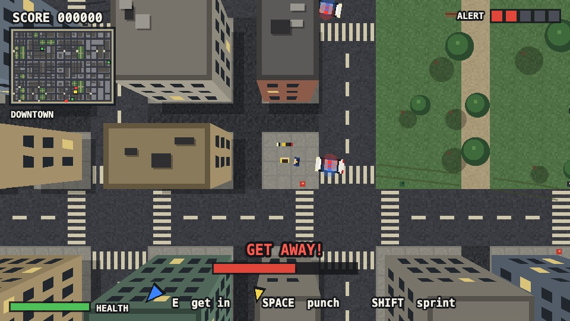
What is new
And all those features are live now! The game on the site today is the second version. This is what changed, in the order you meet it.
You choose who you play: me, Anne, Emma, or somebody of your own with a name and a shirt.
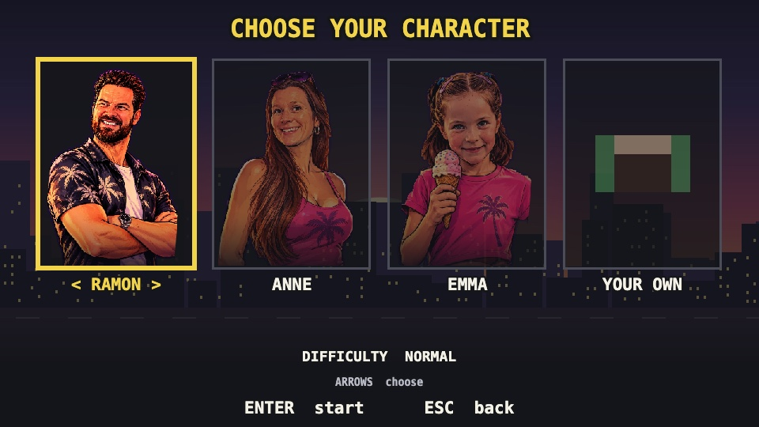
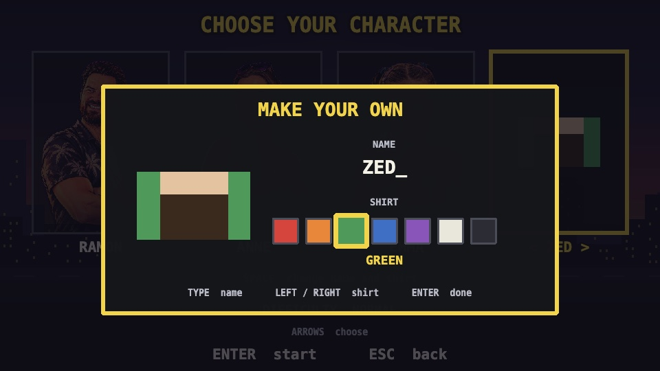
You choose how hard it is, and each level has its own list of best scores. The pause screen has become a menu, and the menu will tell you which key does what.
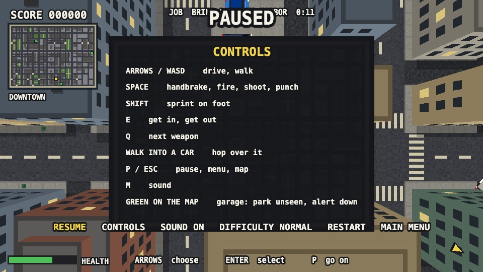
The police shout at you now. On foot they tell you to freeze; in a car they tell you to pull over. My first attempt had the computer read the commands out, and it sounded tinny. Four of them are now recordings of real voices.
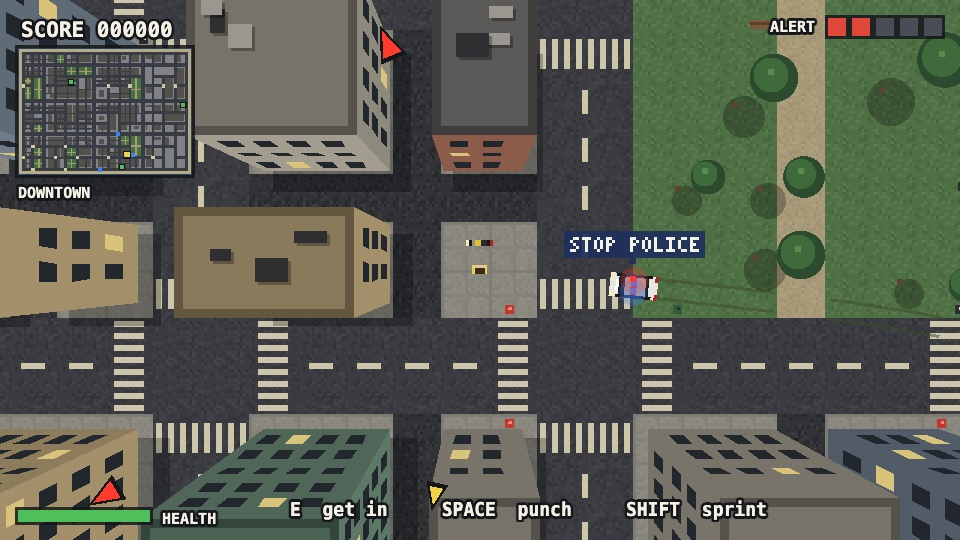
There are garages. Park in one while no police can see you and you come out in a different colour, with the alert one level down.
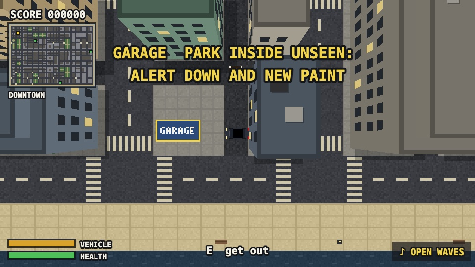
There are short jobs for a bonus, a row of deeds in quick succession pays more, and there are crates that heal you or your car.
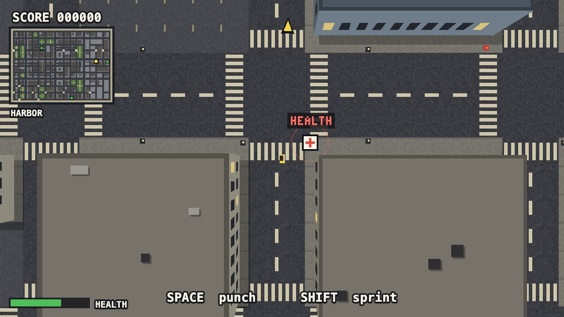
There is more on the road: a motorbike, a bus and an ambulance, vans being unloaded in the middle of a street, and roundabouts.
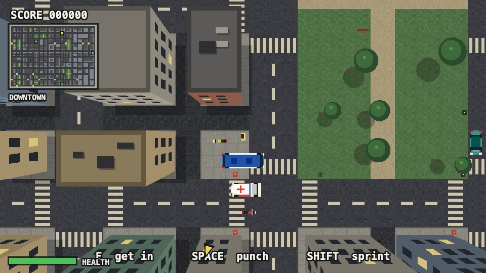
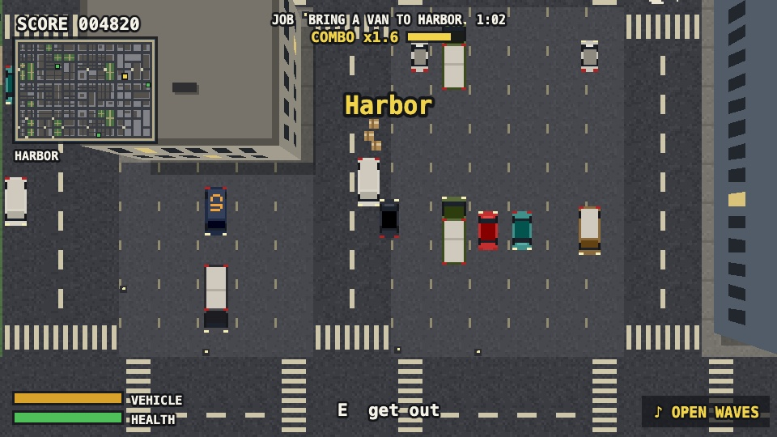
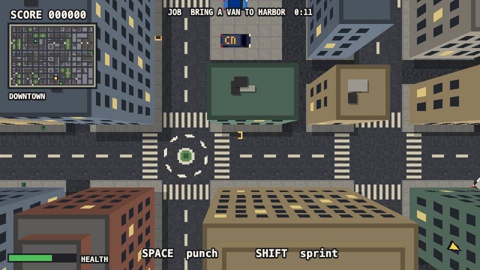
There is more in the way as well, a little of each: a street closed for a market, roadworks, oil, speed bumps, containers in the harbour, and spikes at a police roadblock that flatten your tyres.
The city has a promenade along the sea, all the way round.
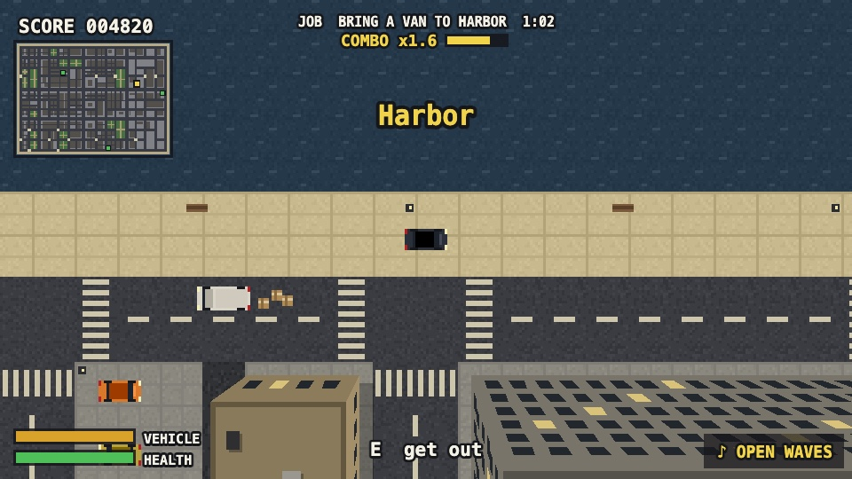
And when a round is over you can turn your score into a picture and send it to somebody who will want to beat it.
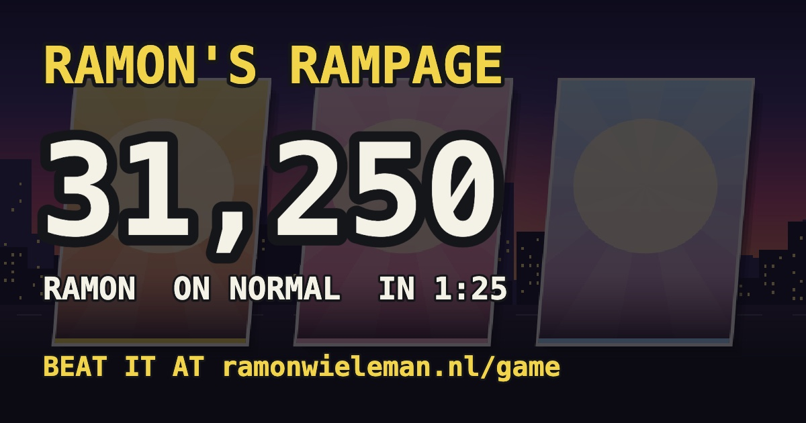
The result is called Ramon's Rampage, and it runs in your browser. Play it
Arrows or WASD to drive and walk, E to get in and out of a car, Space for the handbrake, Shift to sprint, P for the menu.
Two things the AI got wrong, and told me
The roundabouts first. I asked for roundabouts and got an island in the middle of a crossing. Before I ever saw one, the AI had driven its own traffic at them and measured what happened: cars stood still for up to 31 seconds, because the traffic in this game follows fixed lines and has no idea what a roundabout is. So only the car you drive runs into the island. The rest of the traffic drives straight over it. It told me this without being asked. My own complaint was a different one: I could not find any. There are fourteen of them now, and they are bigger.
Then the ambulance. I wanted every new vehicle to have a recording of a real engine, like the others. For the motorbike and the bus it found one. For the ambulance it reported that the only free recording of a real ambulance was of one driving away, with no stretch of it standing still, and that it had measured this rather than listened, because it cannot listen. The ambulance in the game has the engine of a van for wheelchair transport.
I mention these because they are the opposite of Wednesday's scoreboard. Nobody had to find them. They were in the report.
What it adds up to now
| Time | Wednesday, and then Thursday. |
|---|---|
| Code written by me | Still none. |
| Code written by the AI | About 19,400 lines, in 126 saved steps. |
| Automatic tests | 495. They all pass. See above. |
What I take from it this time
On Wednesday my conclusion was that somebody who can read the code has to judge whether it was built well. That still stands. Thursday added a second somebody: the person who uses it.
Nearly five hundred tests said the game worked. I found a feature that did nothing by walking into a car, and another by picking up my own phone. The tests checked what the AI had decided I would do. I did something else, as people do.
None of this is new to anyone who builds software for a living. Put a thing in front of the people who will use it, early, and they will surprise you. I knew the sentence. Now I have a list.
On a laptop you play with the keyboard. On a phone, turn it on its side and you get a stick and buttons on the screen.
Happy playing.
If you want to react, I am on LinkedIn.